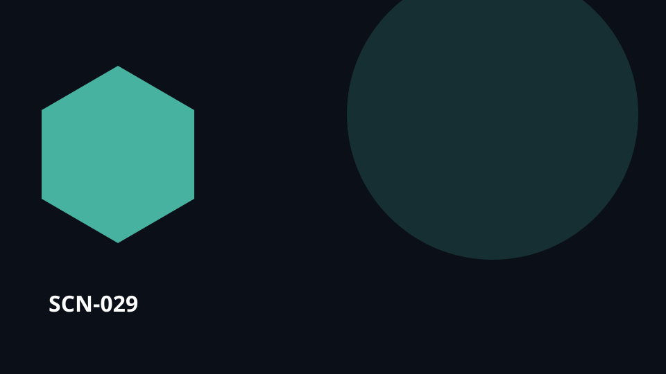

SCN-029 · Learn & Share
A training center links courses to evidence of competence
A training center links courses to evidence of competence. Useful knowledge risks staying with one person, one document or one session. Koali connects the source knowledge, people, practice, feedback and evidence so learning can become a reusable capability rather than a one-off transfer.

SCN-029 — A training center links courses to evidence of competence
Universal pattern — Carry learning through activity, evidence, and demonstrated situated capability.
Pattern family — PAT-05 Connect learning, practice, and evidence
Situation
A training center links courses to evidence of competence. Learning must continue beyond content delivery into practice, evidence, feedback, and demonstrated capability.
What is usually lost
Knowledge stays attached to a person, document, or session and does not transfer well over time.
With Koali
Kristal keeps the relevant knowledge objects, sources, history, relationships, versions, and evidence connected. Konnaxion lets the relevant people discover one another, contribute context, learn, discuss, or co-create around those same objects. Orgo turns the resulting need, decision, or intervention into routed work with responsibilities, dependencies, evidence, and closure. UCKK can turn validated knowledge or experience into learning and multimedia dissemination for the appropriate audience.
Loop
courses → practice → evidence → review → situated competence → opportunity
Usage palette
learn · teach-share · verify · find
Component roles in this scenario
- Kristal ●●●●○ — keeps the knowledge, provenance, relationships, and memory needed to understand the situation.
- Konnaxion ●●●●● — connects the people who can add, challenge, teach, learn, or interpret the shared context.
- Orgo ●●○○○ — takes over when a check, decision, request, or intervention must become tracked work.
- UCKK ●●●○○ — supports learning and multimedia dissemination when the knowledge must reach a broader audience.
What makes this characteristically Koali
The value is not any one isolated feature. It is preserving the same context across courses → … → opportunity so knowledge, people, choices, work, and memory remain connected.
Transferable to
education · technical-trades · health
The domain changes; the pattern remains: Carry learning through activity, evidence, and demonstrated situated capability.
Canonical anchoring
Signature patterns: SIG-06
Related possibility references:
POS-KNOW-001POS-LEARN-001
These references support the architectural composition of the scenario; they do not by themselves validate the full scenario at runtime.
Status
COMPOSED · runtime UNVERIFIED
This scenario is an editorial use case grounded in the documented capability composition. Do not present it as a proven deployment without additional runtime evidence.